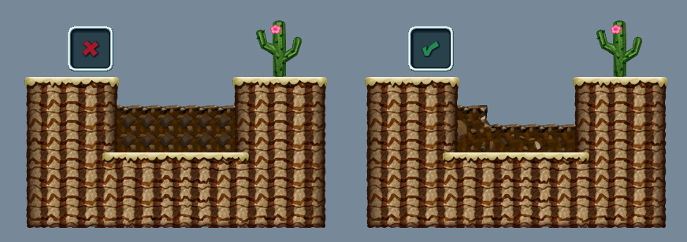

1. When using the tile god sprite, the no effects and no sounds causes some sort of checkerboard problem. Does anybody have the correct spritedata values for no effects or sounds yet full filling of tiles? This option may not be possible since I can't find it in zementblock's spritedata.
ANSWER: Quote From Zementblock: "It works w/out sfx and gfx, but only checkerboard yes. You can place one such tile per block though." One can also do one normal checkerboard and one reverse checkerboard to have the same effect.
2. What are some possible causes for the borders of the zone not being enforced by the game. For example, a level I'm working on has a zone with a definitive top and bottom (the top and bottom of the zone) but the game refuses to believe the top is the top and makes the top of the actual playing area somewhere above the official top of the zone. Is this because the entrance is too close to the top of the zone? Is it zoom related?
ANSWER: Yes, the entrance was too close to the top of the zone, this has been fixed.
The reason it doesn't show the actual map is that you haven't gotten to the right spot. Try scrolling to a different location. You'll find it eventually.
I really like the level! Quick hint: at 0:23, you missed the platform. You can actually make this jump by ground-pounding at the last second. Doing this actually raises Mario's height slightly, allowing for cool things.
I'm fine with making it rvluton format and sticking a file here, but don't fix everything. I think fixing the tpls and translations would just be us stealing something from the creators. The files deserve to be free but you shouldn't just remake his hack for free.
I should probably get GamerBoy to do this, since it is his question, but I'm too lazy to wait for him. Her it goes: in the video for July 2017, there is a pipe with vines encircling it near 2:10. At that point, the pipe shrinks down, and shoots Mario into the air. How did you manage to get the vine-texture to shrink as well?
With the themed contests getting kind of boring, I decided to change up the idea. This time, the only theme the levels should have is that they are toad-house-esque. Any form of toad house will be accepted. For example, you could make a challenge house with a powerup reward or make a maze with a prize at certain endpoints. Really, the concept is up to you.
Newer or Original Super Mario Bros Wii levels are accepted. Please do not make any major changes though. Changes that are accepted are...
● Customized Tilesets
● Customized Music/Sounds
● Customized Models
● Customized Backgrounds
Changes that are not accepted are...
● Customized Sprites
If you have a change that isn’t listed here, please comment and ask me whether it is allowed or not.
The following contains the exact system that will be used for scoring. It might look complicated, but reading it is important. Categories for points include concept, bugs, beauty, and bonus.
CONCEPT:
● Judge’s Decision: 0-4, 0 being terrible concept; 1 being boring concept; 2 being mildly entertaining concept or average concept; 3 being great concept; 4 being better than the judge could have done themselves.
● Reusability: 0-2, 0 being only fun once; 1 being able to be used again; 2 being the level could be present in every world of a hack. If the level concept really should only be used once in a hack, but it has a theme that forces this, then a score of 1 is given.
● Surprise: 0-2, 0 being the concept was obvious; 1 being the concept was interesting, but not surprising; 2 being the concept was outright surprising.
● Whimsicalness: 0-1, 0 being that the concept wasn’t amusing enough to be in a Mario game, 1 being that the concept was amusing enough to be in a Mario game.
BUGS:
● Bug: For each bug found that detracts from the experience, two points are taken away. This can only remove a maximum of 4 points.
● Graphical Glitch: For each graphical glitch or mistake, one point is taken away. This can only remove a maximum of 3 points.
● Concept: If a bug is used in the concept of the level, or doesn’t detract from the experience, a point is added, and no points are taken away. This can only add a maximum of 1 point.
BEAUTY:
● Judge’s Decision: 0-3, 0 being ugly; 1 being mildly irritating; 2 being average; three being beautiful.
● Theme: 0-2, 0 being the tileset/background didn’t match the theme; 1 being a match, 2 being a really nice fit together. If there is no specific theme to the toad house, one point is awarded.
BONUS:
● Judge’s Decision: If there is something not listed here that the judge deems point-worthy, they can give out 0-2 points, but this can only be used once.
● Map Picture: If a koopatlas doodad or a model is created for the toadhouse, two points are awarded.
● Level Start Picture: If a newer level start picture is created, one point is awarded. If newer is not used, another point is given for doing the map picture bonus.
MAXIMUM OF 20 POINTS
The due date will not be announced yet, because there are a lot of problems we have had with meeting these dates. Please do not work on this with somebody else, because that means less competitors. Once three people are competing in the contest, a due date will be announced, probably about 2 months from now. Good luck!!!
PLEASE REPLY IF YOU ARE PARTICIPATING!
I just would like to know who's in.
I'll be judging the contest along with Fruitsmasher.
THE PARTICIPANTS INCLUDE:
Both CLF78 and Vadelma Kisu have decided that they don't have enough time to complete the project. Thankfully, Cloudy Luigi is now thinking about joining!
Nobody felt like joining. Cancelled until further notice.
I'm sure I could arrange another logo to be made.
In fact, I think I could make you another logo myself,
one that looks almost exactly like the one you've made,
except with a separate title.
If you scroll up you should see an image I posted with some synonyms for chaos. It is a post by me, and the image has a white background. Alternatively, you can simply look up some synonyms for chaos here: http://www.thesaurus.com/browse/chaos
Tiling errors are quite common for newcomers to nsmbw hacking. Hopefully after reading this thread, most of the common tiling errors will be cleaned up, making way for aesthetically pleasing levels. Pictures will be provided with captions below them for better understanding. If there is another tiling error you want to be included, message me on discord or comment it here. I'll add it to the list.
CREDITS:
Chickensaver
Zementblock
A common error for beginners is shown above. Using the corner tiles is very important so that the levels don't look unfinished and generally ugly.
Here is another corner error, this time on the insides of the corners. This is just as important as the picture above.
While this isn't specifically a tile error, it is good practice to make blocks three squares above the ground, not two.
Very small holes in the ground simply look odd. Holes should be wide enough to be jumps, not too thin.
Coins should definitely be placed in levels, because levels with few coins are quite bland. However, coins shouldn't be overly used in single locations. Coins should be thoroughly dispersed through the level, perhaps in jump arcs. If jump arcs aren't something you like, putting them on the ground is still possible, just don't let them be directly on the edge of the platform.
Here's another styling tip for coins on top of blocks.
While background rock does look pleasing, you should make sure you have the proper borders around them.

While on the topic of background rock formations, you should be sure not to make them too flat. Also, the one by one tiles of rock can be very repetitive, so they shouldn't be used in long rows.
Though it may seem obvious, some people don't know how to make multiple decorations on top of each other. Simply using different layers will fix this problem. Be wary of doing even the correct version of this too much though, as some people don't like too many background decorations piled on top of each other.
This image of pipes had two problems. The yellow pipe should be fully behind the ground and the green pipe shouldn't jaggedly cut off the tiles of the ground. The Hole that the green pipe makes should also be partially filled with background rock as well. Another problem to some people is that they don't like seeing these two ways to make pipes go into the ground right next to each other, so choose only one option per level.
This image is a bit confusing. The top left is problematic because when Mario exits the pipe, his feet can be seen at the bottom of the pipe. To fix this problem, the pipe can be extended. Unfortunately, there is still a problem. Both of the top pictures show a pipe going into solid on top platforms, which makes no sense. The two bottom pictures show ways to remove this solid on top platform.
Another problem with pipes is that they don't really make sense when placed on solid on top tiles like the ones shown above. One way to fix this is to add lighter, layer 2 pipes, simply to be decorations. Unfortunately, the pipe shown here would require a new tileset, so it is better to simply not put pipes there.
Sometimes, people like to decorate their levels with rocks jutting out of the sides of the ground. This is a pleasing decoration but only when done right. The background should be filled in to prevent a hole into the BG of the level. Simple rock is a good way to get rid of this space.
Another error with rock blocks is when they are too big. Make sure to use smaller blocks when decorating. Though it may seem more time consuming, it will result in a better looking decoration. Also, blocks of the same type shouldn't be placed directly next to each other if it can be helped.
When adding layer 2 solid-on-top tiles next to slopes, there is a possibility of having the player glitch through the floor with the small gap. Adding invisible tiles will sometimes help.
When a pow-block is used, the screen shakes, so all tiles must be extended one tile outside of the zone border to ensure no graphical problems. When pits are added to a level, Mario dies only after he falls beyond the zone, thus, pits should have four-tile extensions. Though it isn't shown in this picture, the top of the screen extends about 10 tiles above the zone, making above zone secrets like in original nsmbw's 1-3 possible.
In this image, Zementblock shows how tilesets usually work. This is very important information for newcomers wanting to fix their tiling errors.
Since the number of star coins is limited to three, here is a list of other possible rewards. Clearly, it is quite short, so any other ideas are appreciated. Feel free to comment more ideas.
Everything Other Than Star Coins:
-One Ups
-Coins (Normal, P-Switch)
-Helpful Powerup (Normal, Roulette, Red Coins, Secret Yoshi)
-Secret Exit
-Easter Eggs (Something Like The 8-Bit Luigis)
-Pow Block (For Coins And Defeating Enemies)
When adding bonuses, they should be hidden or have small puzzles that must be completed to allow the player access to rewards. The best type of hidden reward allows the player to see the destination, but not how to actually get there.
Don't get your hopes up. Marchand hasn't released anything he has made, and is not pursuing NSMBW anymore. Obviously, it is possible, but certainly not probable.
If I understand you correctly, that is completely implausible. To add tilesets, you would need to specify where to add them and Reggie would need to figure out where to get them from. This takes more steps than simply copying them and then pasting into the desired folder. Adding music would require the combining of multiple programs into one, which would require so much work it wouldn't be worth it. Adding sprites is practically impossible as well because sprite injections don't exist, and coding would need to be done with an external program anyway. If you are talking about only adding things from separate hacks, it would still be more easily done by hand, rather than specifying everything in Reggie itself.
This thread shows some common tiling errors. If you scroll down, you can find this image. It shows background rocks but it applies to all tilesets. You should vary the tiling.